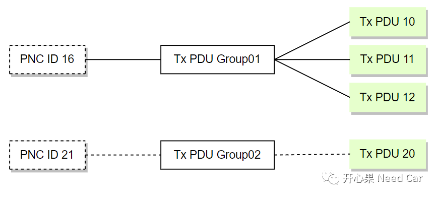
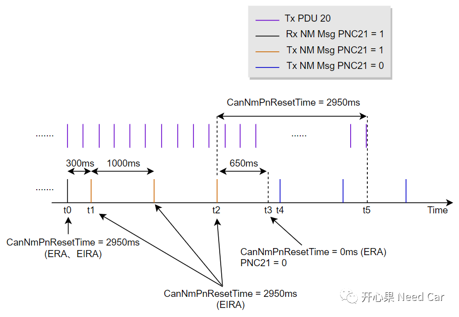
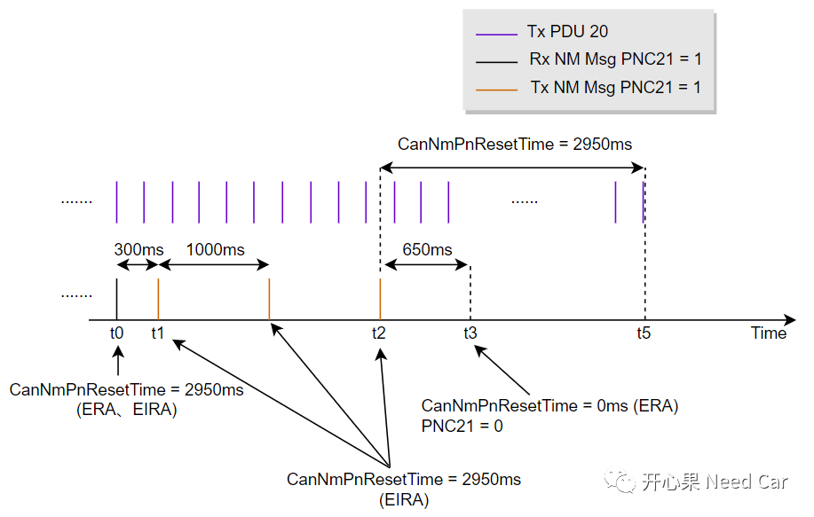
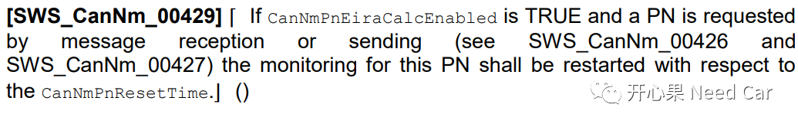
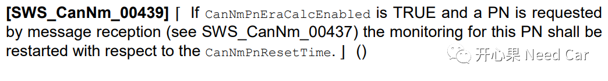

看到CanNmPnResetTime这个时间参数，大家应该能猜到，本文要聊Partial Network问题，前文中有聊过CanNmPnResetTime，可以参考前文Autosar网络管理：Partial Network基础。本文着重点：CanNmPnResetTime对关联Tx PDU的发送影响。
网络管理的需求中，会要求配置不同的PDU Group，而不同的PNC #n会关联不同的PDU Group，进而控制不同PDU的收/发行为。假设：某节点关联PNC16和PNC21，PNC16关联Tx PDU Group01，PNC21关联Tx PDU Group02，Tx PDU Group01内包含Tx PDU 10、Tx PDU 11、Tx PDU 12，Tx PDU Group02内包含Tx PDU 20，如下所示：

个人认为：平时所说的“PNC #n与某个发送报文关联”表达并不准确，应该是PNC #n与某个PDU Group关联。
举例：某节点网络类型是主动网络，该节点与PNC21关联，PNC21对应Tx PDU Group02，Tx PDU Group02中包含Tx PDU 20，节点网络管理报文的正常发送周期为1000ms，PNC21置位/复位与Tx PDU 20（周期200ms）的发送行为如下所示：

t0时刻，节点接收到一帧有效的网络管理报文，其中PNC21 = 1，此时重置CanNmPnResetTime（ = 2950ms），这里重置的Timer包括ERA、EIRA的CanNmPnResetTime;
t1时刻，节点发送网络管理报文，PNC21 = 1，假设节点在NOS（Normal Operation State），同时重置EIRA的CanNmPnResetTime；
t2时刻，2300ms内没有收到PNC21 = 1的网络管理报文，节点最后一次发送网络管理报文PNC21 = 1，即：CanNmPnResetTime（EIRA）最后一次重置为2950ms；
t3时刻，2950ms内没有收到网络管理报文或者收到的网络管理报文PNC21=0，此时CanNmPnResetTime = 0（ERA），同时复位PNC21，即：PNC21 = 0;
t4时刻，节点发送的网络管理报文，PNC21 = 0；
t5时刻，节点PNC21对应的应用报文Tx PDU 20停发。
假设：网段内只有一个PNC或者其他Channel路由过来某个PNC（比如：PNC21），NM Msg的发送行为如下所示：

1、CanNmPnResetTime分析
每次接收/发送NM Msg时，如果PNC #n = 1，则重置EIRA CanNmPnResetTime，Autosar解释如下所示：

每次接收NM Msg时，如果PNC #n = 1，则重置ERA CanNmPnResetTime，Autosar解释如下所示：


参考资料
SIMPLE TITLE
AUTOSAR_SWS_CANNetworkManagement.pdf
往期精彩回顾